[MathJax off]
3 Access to the incidence geometry
In Section 2.1, we introduced incidence geometries to describe polygonal complexes. This chapter describes several different ways to access these incidence structures. Most of these methods are also applicable to twisted polygonal complexes. For more specific access to twisted polygonal complexes, compare Chapter 5.
In Section 3.1, the labeling conventions for vertices, edges, and faces are explained. The central incidence relations between them are described in Section 3.2. Some more specialized applications for incidence can be found in Chapter 10.
Finally the sections 3.3, 3.4, and 3.5 deal with variations of incidence that are usually not needed by the standard user.
3.1 Labels of vertices, edges and faces
In (twisted) polygonal complexes (the most general supported incidence structure, compare Chapter 2) all vertices, edges, and faces are labelled by positive integers.
These labels do not have to be consecutive or disjoint, as shown in the following example:
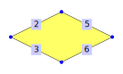
gap> complex := PolygonalComplexByDownwardIncidence(
> [ , [2,3], [2,5], , [3,7], [5,7] ],
> [ , , [2,3,5,6] ] );;
We can access the sets of all those labels by Vertices, Edges, and Faces. If only the number of vertices is relevant, we can use NumberOfVertices instead (likewise for edges and faces).
3.1-1 Vertices
‣ Vertices( complex ) | ( operation ) |
‣ VerticesAttributeOfComplex( complex ) | ( attribute ) |
‣ NumberOfVertices( complex ) | ( attribute ) |
Returns: A set of positive integers/a non-negative integer
Return the set/number of vertices.
As an example consider the polygonal complex from the beginning of Section 3.1:
gap> Vertices(complex);
[ 2, 3, 5, 7 ]
gap> NumberOfVertices(complex);
4
We have separated the operation Vertices from the corresponding attribute because there is a naming clash with the package grape.
3.1-2 Edges
‣ Edges( complex ) | ( attribute ) |
‣ NumberOfEdges( complex ) | ( attribute ) |
Returns: A set of positive integers/a non-negative integer
Return the set/number of edges.
As an example consider the polygonal complex from the beginning of section 3.1:
gap> Edges(complex);
[ 2, 3, 5, 6 ]
gap> NumberOfEdges(complex);
4
3.1-3 Faces
‣ Faces( complex ) | ( attribute ) |
‣ NumberOfFaces( complex ) | ( attribute ) |
Returns: A set of positive integers/a non-negative integer
Return the set/number of faces.
As an example consider the polygonal complex from the beginning of section 3.1:
gap> Faces(complex);
[ 3 ]
gap> NumberOfFaces(complex);
1
3.2 Incidence between vertices, edges, and faces
With the labels of vertices, edges and faces (which we can access by the methods of section 3.1) we can describe the incidence structure by lists of sets. All those methods have the form *Of*, e.g. VerticesOfFaces and EdgesOfVertices.
We will illustrate the general pattern of these methods by showcasing these two methods. For that we will use the following polygonal complex:
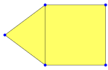
gap> complex := PolygonalComplexByDownwardIncidence(
> [ , , , , , [2,5], , [2,3], [3,5], [11,5], , [3,7], [7,11] ],
> [[6,8,9], , , [9,10,12,13]]);;
gap> Vertices(complex);
[ 2, 3, 5, 7, 11 ]
gap> Edges(complex);
[ 6, 8, 9, 10, 12, 13 ]
gap> Faces(complex);
[ 1, 4 ]
The method VerticesOfFaces tells us which vertices are incident to which faces.
gap> VerticesOfFaces(complex);
[ [ 2, 3, 5 ],,, [ 3, 5, 7, 11 ] ]
The first entry of this list contains a set of all vertices that are incident to face I. The second and third entries are not bound since there are no faces II and III. Finally, the fourth entry contains all vertices that are incident to face IV.
So, we have a list that contains sets of vertices and is indexed by the face labels.
The method EdgesOfVertices works in the same way: It returns a list that contains sets of edges and is indexed by the vertex labels.
gap> EdgesOfVertices(complex);
[ , [ 6, 8 ], [ 8, 9, 12 ],, [ 6, 9, 10 ],, [ 12, 13 ],,,, [ 10, 13 ] ]
For example, if we consider the third entry of this list, we find the set [ 8, 9, 12 ]. Those are all edges that are incident to the vertex 3.
In the same way all other *Of*-methods are defined.
3.2-1 EdgesOfVertices
‣ EdgesOfVertices( complex ) | ( attribute ) |
‣ EdgesOfVertex( complex, vertex ) | ( operation ) |
‣ EdgesOfVertexNC( complex, vertex ) | ( operation ) |
Returns: a list of sets of positive integers / a set of positive integers
The method EdgesOfVertex(complex, vertex) returns the set of all edges that are incident to vertex. The NC-version does not check whether the given vertex is a vertex of complex.
The attribute EdgesOfVertices(complex) collects all of those sets in a list that is indexed by the vertex labels, i.e. EdgesOfVertices(complex)[vertex] = EdgesOfVertex(complex, vertex). All other positions of this list are not bound.
As an example, consider the polygonal complex that was introduced at the start of section 3.2:
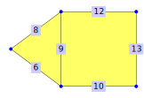
gap> EdgesOfVertex(complex, 2);
[ 6, 8 ]
gap> EdgesOfVertex(complex, 5);
[ 6, 9, 10 ]
gap> EdgesOfVertices(complex);
[ , [ 6, 8 ], [ 8, 9, 12 ],, [ 6, 9, 10 ],, [ 12, 13 ],,,, [ 10, 13 ] ]
3.2-2 FacesOfVertices
‣ FacesOfVertices( complex ) | ( attribute ) |
‣ FacesOfVertex( complex, vertex ) | ( operation ) |
‣ FacesOfVertexNC( complex, vertex ) | ( operation ) |
Returns: a list of sets of positive integers / a set of positive integers
The method FacesOfVertex(complex, vertex) returns the set of all faces that are incident to vertex. The NC-version does not check whether the given vertex is a vertex of complex.
The attribute FacesOfVertices(complex) collects all of those sets in a list that is indexed by the vertex labels, i.e. FacesOfVertices(complex)[vertex] = FacesOfVertex(complex, vertex). All other positions of this list are not bound.
As an example, consider the polygonal complex that was introduced at the start of section 3.2:
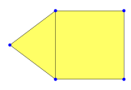
gap> FacesOfVertex(complex, 2);
[ 1 ]
gap> FacesOfVertex(complex, 5);
[ 1, 4 ]
gap> FacesOfVertices(complex);
[ , [ 1 ], [ 1, 4 ],, [ 1, 4 ],, [ 4 ],,,, [ 4 ] ]
3.2-3 VerticesOfEdges
‣ VerticesOfEdges( complex ) | ( attribute ) |
‣ VerticesOfEdge( complex, edge ) | ( operation ) |
‣ VerticesOfEdgeNC( complex, edge ) | ( operation ) |
Returns: a list of sets of positive integers / a set of positive integers
The method VerticesOfEdge(complex, edge) returns the set of all vertices that are incident to edge. The NC-version does not check whether the given edge is an edge of complex.
The attribute VerticesOfEdges(complex) collects all of those sets in a list that is indexed by the edge labels, i.e. VerticesOfEdges(complex)[edge] = VerticesOfEdge(complex, edge). All other positions of this list are not bound.
As an example, consider the polygonal complex that was introduced at the start of section 3.2:
gap> VerticesOfEdge(complex, 8);
[ 2, 3 ]
gap> VerticesOfEdge(complex, 12);
[ 3, 7 ]
gap> VerticesOfEdges(complex);
[ ,,,,, [ 2, 5 ],, [ 2, 3 ], [ 3, 5 ], [ 5, 11 ],, [ 3, 7 ],
[ 7, 11 ] ]
3.2-4 FacesOfEdges
‣ FacesOfEdges( complex ) | ( attribute ) |
‣ FacesOfEdge( complex, edge ) | ( operation ) |
‣ FacesOfEdgeNC( complex, edge ) | ( operation ) |
Returns: a list of sets of positive integers / a set of positive integers
The method FacesOfEdge(complex, edge) returns the set of all faces that are incident to edge. The NC-version does not check whether the given edge is an edge of complex.
The attribute FacesOfEdges(complex) collects all of those sets in a list that is indexed by the edge labels, i.e. FacesOfEdges(complex)[edge] = FacesOfEdge(complex, edge). All other positions of this list are not bound.
As an example, consider the polygonal complex that was introduced at the start of section 3.2:
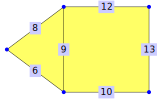
gap> FacesOfEdge(complex, 9);
[ 1, 4 ]
gap> FacesOfEdge(complex, 10);
[ 4 ]
gap> FacesOfEdges(complex);
[ ,,,,, [ 1 ],, [ 1 ], [ 1, 4 ], [ 4 ],, [ 4 ], [ 4 ] ]
3.2-5 VerticesOfFaces
‣ VerticesOfFaces( complex ) | ( attribute ) |
‣ VerticesOfFace( complex, face ) | ( operation ) |
‣ VerticesOfFaceNC( complex, face ) | ( operation ) |
Returns: a list of sets of positive integers / a set of positive integers
The method VerticesOfFace(complex, face) returns the set of all vertices that are incident to face. The NC-version does not check whether the given face is a face of complex.
The attribute VerticesOfFaces(complex) collects all of those sets in a list that is indexed by the face labels, i.e. VerticesOfFaces(complex)[face] = VerticesOfFace(complex, face). All other positions of this list are not bound.
As an example, consider the polygonal complex that was introduced at the start of section 3.2:
gap> VerticesOfFace(complex, 1);
[ 2, 3, 5 ]
gap> VerticesOfFace(complex, 4);
[ 3, 5, 7, 11 ]
gap> VerticesOfFaces(complex);
[ [ 2, 3, 5 ],,, [ 3, 5, 7, 11 ] ]
3.2-6 EdgesOfFaces
‣ EdgesOfFaces( complex ) | ( attribute ) |
‣ EdgesOfFace( complex, face ) | ( operation ) |
‣ EdgesOfFaceNC( complex, face ) | ( operation ) |
Returns: a list of sets of positive integers / a set of positive integers
The method EdgesOfFace(complex, face) returns the set of all edges that are incident to faces. The NC-version does not check whether the given face is a face of complex.
The attribute EdgesOfFaces(complex) collects all of those sets in a list that is indexed by the face labels, i.e. EdgesOfFaces(complex)[face] = EdgesOfFace(complex, face). All other positions of this list are not bound.
As an example, consider the polygonal complex that was introduced at the start of section 3.2:
gap> EdgesOfFace(complex, 1);
[ 6, 8, 9 ]
gap> EdgesOfFace(complex, 4);
[ 9, 10, 12, 13 ]
gap> EdgesOfFaces(complex);
[ [ 6, 8, 9 ],,, [ 9, 10, 12, 13 ] ]
3.3 Face-induced order of incident vertices/edges
In section 3.2 we introduced the methods VerticesOfFace (3.2-5) and EdgesOfFace (3.2-6) to determine the vertices and edges of a given face. A drawback of those methods is that they always return sets. This might not be sufficient in the case of non-triangular faces, as shown in the following example. #!

gap> pentagon := PolygonalSurfaceByDownwardIncidence(
> [,[3,9],[2,6],[1,9],,[2,3],,[1,6]],
> [, [2,3,4,6,8]] );;
gap> VerticesOfFace(pentagon,2);
[ 1, 2, 3, 6, 9 ]
gap> EdgesOfFace(pentagon,2);
[ 2, 3, 4, 6, 8 ]
If we want to know in which order the vertices (or edges) are arranged around the perimeter of the given face, the previous methods are quite clumsy. For that reason the method PerimeterPathOfFace was written.
gap> perim := PerimeterPathOfFace( pentagon, 2 );
( v1, E4, v9, E2, v3, E6, v2, E3, v6, E8, v1 )
It returns the perimeter of the polygon as a perimeter path (a special vertex-edge-path), not a list (all available methods for vertex-edge-paths and perimeter paths can be found in sections 8.1 and 8.2).
gap> IsList(perim);
false
gap> IsVertexEdgePath(perim);
true
A vertex-edge-path in a polygonal complex is a tuple \((v_1, e_1, v_2, e_2, \ldots ,v_n, e_n, v_{{n+1}})\) such that
The \(v_i\) are vertices of the polygonal complex
The \(e_j\) are edges of the polygonal complex
For the edge \(e_j\) the set of incident vertices is \(\{v_j,v_{{j+1}}\}\)
The order of vertices and edges is best described by a cyclic permutation.
gap> VerticesAsPerm(perim);
(1,9,3,2,6)
gap> EdgesAsPerm(perim);
(2,6,3,8,4)
There are two possible cyclic permutations of vertices and edges (clockwise and counter-clockwise). Since the method has to return a unique value, one of them has to be picked as a convention. We choose this one, since the vertex permutation has the smaller image under 1 (the smallest of the vertices).
While the permutation representation is most natural, in many cases a list would be more convenient (be careful, the first vertex is repeated at the end!).
gap> VerticesAsList(perim);
[ 1, 9, 3, 2, 6, 1 ]
gap> EdgesAsList(perim);
[ 4, 2, 6, 3, 8 ]
While the vertex list starts with the smallest vertex, the edge list will start with an edge incident to the smallest vertex (the other end is the smaller of the two adjacent vertices).
3.3-1 PerimeterPathsOfFaces
‣ PerimeterPathsOfFaces( complex ) | ( attribute ) |
‣ PerimeterPathOfFace( complex, face ) | ( operation ) |
‣ PerimeterPathOfFaceNC( complex, face ) | ( operation ) |
Returns: a list of vertex-edge-paths
The operation PerimeterPathOfFace(complex,face) returns a perimeter path (section 8.2), i.e. a closed vertex-edge-path (for the exact definition compare 8.1-1 and 8.1-7) of all vertices and edges incident to the given face.
Since this condition does not define the path uniquely, we further stipulate that perimeter path starts with the smallest vertex and continues with the smallest incident edge. For polygonal complexes, this defines the path uniquely.
The attribute PerimeterPathsOfFaces(complex) collects all of those vertex-edge-paths in a list that is indexed by the face labels, i.e. PerimeterPathsOfFaces(complex)[face] = PerimeterPathOfFace(complex, face). All other positions of this list are not bound.
The NC-version does not check if the given face is a face of the given complex. The operations
As an example consider the polygonal complex that was introduced at the start of section 3.3:
gap> perim := PerimeterPathOfFace(pentagon, 2);
( v1, E4, v9, E2, v3, E6, v2, E3, v6, E8, v1 )
gap> PathAsList(perim);
[ 1, 4, 9, 2, 3, 6, 2, 3, 6, 8, 1 ]
gap> VerticesAsList(perim);
[ 1, 9, 3, 2, 6, 1 ]
gap> EdgesAsList(perim);
[ 4, 2, 6, 3, 8 ]
gap> VerticesAsPerm(perim);
(1,9,3,2,6)
gap> EdgesAsPerm(perim);
(2,6,3,8,4)
gap> PerimeterPathsOfFaces(pentagon);
[ , ( v1, E4, v9, E2, v3, E6, v2, E3, v6, E8, v1 ) ]
3.4 Circular path around a vertex
In section 3.2 the methods EdgesOfVertex (3.2-1) and FacesOfVertex (3.2-2) were introduced. They allow access to the edges and faces incident to a vertex but they don't give any information about the relationship between them.
For polygonal surfaces (described in section 2.3) there is a natural ordering of the edges and faces that are incident to a vertex. It is achieved by "travelling around the vertex" while staying on the surface. This order is called umbrella-path and we formalize it by edge-face-paths (section 8.3 contains the methods to access those paths).
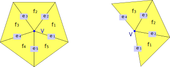
An umbrella-path around the vertex \(V\) is a tuple \((e_1,f_1,e_2,f_2, \ldots, e_n, f_n, e_{{n+1}})\) such that:
The \(f_i\) are pairwise disjoint faces incident to \(V\).
The \(e_i\) are pairwise disjoint edges incident to \(V\) (with the possible exception of \(e_1 = e_{{n+1}}\) in the case \(n > 1\)).
The edges \(e_i\) and \(e_{{i+1}}\) are incident to \(f_i\) for all \(i\).
If \(e_1 = e_{{n+1}}\) the umbrella-path is called closed.
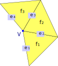
In the image above we have two umbrella-paths that contain all edges and faces that are incident to the vertex \(V\), namely \((e_1,f_1,e_2,f_2,e_3,f_3,e_4)\) and \((e_4,f_3,e_3,f_2,e_2,f_1,e_1)\). Both of them encode the same information. By convention, we will choose the umbrella-path with the smaller first entry (\(e_1\) or \(e_4\)) to be the umbrella-path of \(V\).
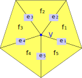
In this image we have ten different closed umbrella-paths that contain all edges and faces that are incident to the vertex \(V\), like \((e_1, f_1, e_2, f_2, e_3, f_3, e_4, f_4, e_5, f_5, e_1)\) and \((e_3, f_2, e_2, f_1, e_1, f_5, e_5, f_4, e_4, f_3, e_3)\). Up to cyclic permutation and inversion they are equivalent (they form an orbit under the dihedral group of order 10).
If we have to pick one by convention, we will choose the first entry to be minimal, say \(e_2\). This leaves us with the two paths \((e_2,f_2,\ldots)\) and \((e_2,f_1,\ldots)\). Of those, we pick the one with the smallest second entry (\(f_2\) or \(f_1\)).
3.4-1 UmbrellaPathsOfVertices
‣ UmbrellaPathsOfVertices( surface ) | ( attribute ) |
‣ UmbrellaPathOfVertex( surface, vertex ) | ( operation ) |
‣ UmbrellaPathOfVertexNC( surface, vertex ) | ( operation ) |
Returns: a list of edge-face-paths
The method UmbrellaPathOfVertex(surface,vertex) returns an umbrella-path around vertex (as defined in section 3.4) that contains all edges and faces incident to vertex, with the following conventions:
The first entry of the umbrella-path is minimal.
In the case of a closed umbrella-path, after restricting with the first convention, the second entry of the umbrella-path is minimal
If such an umbrella-path does not exist (this might happen if the polygonal complex is edge-ramified) or is not unique (this might happen if the polygonal complex is vertex-ramified), fail is returned. To access the contents of the umbrella-paths, the methods from section 8.3 can be used.
The attribute UmbrellaPathsOfVertices(surface) collects all of those umbrella-paths in a list that is indexed by the vertex labels, i.e. UmbrellaPathsOfVertices(surface)[vertex] = UmbrellaPathOfVertex(surface, vertex). All other positions of this list are not bound.
The NC-version does not check whether the given vertex lies in the given surface.
For polygonal complexes with vertex-ramifications the umbrella-paths around a vertex are not unique. The methods from 3.4-2 return all of those umbrella-paths.
As example consider the following polygonal surface:
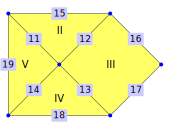
gap> surface := PolygonalSurfaceByDownwardIncidence(
> [,,,,,,,,,, [1,6],[1,7],[1,9],[1,10],[6,7],[7,8],[8,9],[9,10],[10,6]],
> [,[11,12,15],[12,13,16,17],[14,13,18],[11,19,14]] );;
gap> um1 := UmbrellaPathOfVertex(surface, 1);
( e11, F2, e12, F3, e13, F4, e14, F5, e11 )
gap> EdgesAsList(um1);
[ 11, 12, 13, 14, 11 ]
gap> EdgesAsPerm(um1);
(11,12,13,14)
gap> um7 := UmbrellaPathOfVertex(surface, 7);
| e15, F2, e12, F3, e16 |
gap> EdgesAsList(um7);
[ 15, 12, 16 ]
gap> FacesAsList(um7);
[ 2, 3 ]
gap> UmbrellaPathsOfVertices(surface);
[ ( e11, F2, e12, F3, e13, F4, e14, F5, e11 ),,,,, | e15, F2, e11, F5, e19 |,
| e15, F2, e12, F3, e16 |, | e16, F3, e17 |,
| e17, F3, e13, F4, e18 |, | e18, F4, e14, F5, e19 | ]
For ramified polygonal surfaces it might happen that there is no single umbrella-path that contains all edges and faces that are incident to one vertex.
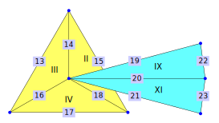
But there is a set of umbrella-paths that partitions the incident edges and faces (i.e. every incident edge or face appears in exactly one umbrella-path). In the above image, the umbrella-path-partition of the vertex 1 is \([ [ 14, 2, 18, 4, 16, 3, 14 ], [ 19, 9, 20, 11, 21 ] ]\).
3.4-2 UmbrellaPathPartitionsOfVertices
‣ UmbrellaPathPartitionsOfVertices( ramSurf ) | ( attribute ) |
‣ UmbrellaPathPartitionOfVertex( ramSurf, vertex ) | ( operation ) |
‣ UmbrellaPathPartitionOfVertexNC( ramSurf, vertex ) | ( operation ) |
Returns: a list of sets of edge-face-paths
The method UmbrellaPathPartitionOfVertex(ramSurf, vertex) returns a set of umbrellas-paths around vertex (as defined in section 3.4). The edges and faces incident to vertex are partitioned by these umbrella-paths (i.e. each of them appears in exactly one umbrella-path).
The result is determined as follows:
The partition of edges and faces is unique (reachability by umbrella-paths around vertex).
Every set in this partition consists of the elements of exactly one umbrella-path. For each set there are several options. We choose one of those by this convention:
The first entry of the returned umbrella-path will be as small as possible.
The second entry of the returned umbrella-path will be as small as possible (after having minimized the first entry). This condition is non-trivial only for closed umbrella-paths .
If there is no such set of umbrella-paths (which can happen for polygonal complexes with edge-ramifications), fail is returned instead.
The attribute UmbrellaPathPartitionsOfVertices(ramSurf) collects these partitions in a list (indexed by the vertex labels), i.e. UmbrellaPathPartitionsOfVertices(ramSurf)[vertex] = UmbrellaPathPartitionOfVertex(ramSurf, vertex). All other positions of this list are not bound.
For a surface, all partitions will only consist of one element. In this case, the methods in 3.4-1 will only return these unique umbrella-paths.
The NC-version does not check whether vertex lies in ramSurf.
As example consider the following polygonal complex with vertex-ramifications (but no edge-ramifications).
gap> ramSurf := PolygonalComplexByDownwardIncidence(
> [ ,,,,,,,,,,,,[6,5],[1,5],[5,7],[6,1],[6,7],[1,7],
> [1,8],[1,10],[1,12],[8,10],[10,12] ],
> [ , [14,15,18],[13,14,16],[16,17,18],,,,,[19,22,20],,[20,21,23] ]);;
gap> UmbrellaPathPartitionOfVertex(ramSurf, 1);
[ ( e14, F2, e18, F4, e16, F3, e14 ), | e19, F9, e20, F11, e21 | ]
gap> UmbrellaPathPartitionOfVertex(ramSurf, 5);
[ | e13, F3, e14, F2, e15 | ]
gap> UmbrellaPathPartitionsOfVertices(ramSurf);
[ [ ( e14, F2, e18, F4, e16, F3, e14 ), | e19, F9, e20, F11, e21 | ],,,,
[ | e13, F3, e14, F2, e15 | ], [ | e13, F3, e16, F4, e17 | ],
[ | e15, F2, e18, F4, e17 | ], [ | e19, F9, e22 | ],,
[ | e22, F9, e20, F11, e23 | ],, [ | e21, F11, e23 | ] ]
3.4-3 Star
‣ Star( surface, vertex ) | ( operation ) |
‣ StarNC( surface, vertex ) | ( operation ) |
‣ Star( surface, vertices ) | ( operation ) |
‣ StarNC( surface, vertices ) | ( operation ) |
Returns: a subsurface
The method Star(surface, vertex) returns for vertex the subcomplex which is determined by the faces around vertex. The method Star(surface, vertices) returns the subcomplex which is determined by the faces around all the vertices in vertices. The NC-version does not check whether the given vertex is a vertex of surface.
For example, consider the hexagon:
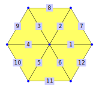
gap> hex := SimplicialSurfaceByDownwardIncidence(
> [ [1,7], [2,7],[3,7],[4,7],[5,7],[6,7],[1,2],[2,3],[3,4],[4,5],[5,6], [1,6] ],
> [ [1,2,7],[2,3,8],[3,4,9],[4,5,10],[5,6,11],[1,6,12] ]);;
gap> star1:=Star(hex,7);
simplicial surface (7 vertices, 12 edges, and 6 faces)
gap> IsIsomorphic(star1,hex);
true
gap> star2:=Star(hex,[1,7]);
simplicial surface (7 vertices, 12 edges, and 6 faces)
gap> IsIsomorphic(star2,hex);
true
The star of vertex 7 and the star of vertex 1 and 7 is the same as the hexagon.
3.4-4 Link
‣ Link( surface ) | ( attribute ) |
‣ Link( surface, vertex ) | ( operation ) |
‣ LinkNC( surface, vertex ) | ( operation ) |
Returns: a list of vertex-edge-paths
The method Link(surface, vertex) returns for vertex the vertex-edge-path around the vertex which contains the edges not incident to vertex. That means the vertex-edge-path is the boundary of the umbrella of vertex respectively the boundary of Star(surface, vertex). The NC-version does not check whether the given vertex is a vertex of surface.
The attribute Link(surface) collects all of those paths in a list that is indexed by the edge labels, i.e. Link(surface)[vertex] = Link(surface, vertex). All other positions of this list are not bound.
For example, consider the hexagon:
gap> hex := SimplicialSurfaceByDownwardIncidence(
> [ [1,7], [2,7],[3,7],[4,7],[5,7],[6,7],[1,2],[2,3],[3,4],[4,5],[5,6], [1,6] ],
> [ [1,2,7],[2,3,8],[3,4,9],[4,5,10],[5,6,11],[1,6,12] ]);;
gap> link:=Link(hex,7);
( v1, E7, v2, E8, v3, E9, v4, E10, v5, E11, v6, E12, v1 )
gap> Link(hex)[7]=link;
true
The link of vertex 7 is the same as the boundary of the hexagon.
3.5 Perimeter around holes in surfaces
If a (twisted) polygonal surface (introduced in 2.3) is not closed, it has at least one "hole". For example the open pyramid and the open bag each have one hole:
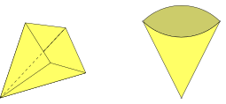
Informally, a hole can be characterised by the vertices and edges along its perimeter. These can be given as an alternating path of vertices and edges that starts and stops with the same vertex. This notion is formalized by vertex-edge-paths which are defined in more detail in section 8.1.
For example, consider the following polygonal surface:
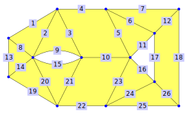
gap> holeSurf := PolygonalSurfaceByDownwardIncidence(
> [ [1,4],[1,6],[1,7],[1,2],[2,8],[2,5],[2,3],[4,6],[6,7],[7,8],[5,8],
> [3,5],[4,9],[6,9],[6,7],[8,10],[5,10],[3,13],[9,11],[6,11],[7,11],
> [11,12],[8,12],[10,12],[12,13],[10,13] ],
> [ [1,2,8],[2,3,9],[3,4,5,10],[5,6,11],[6,7,12],[8,13,14],,,
> [12,17,18,26],[14,19,20],[15,20,21],[10,21,22,23],[16,23,24],
> [24,25,26] ]);;
This polygonal surface has three holes. Two of them are easy to see and consist of two and three edges each. The third one is limited by the outer boundary of the visualisation and consists of eight edges.
gap> PerimeterOfHoles(holeSurf);
[ ( v1, E1, v4, E13, v9, E19, v11, E22, v12, E25, v13, E18, v3, E7, v2,
E4, v1 ), ( v5, E11, v8, E16, v10, E17, v5 ), ( v6, E9, v7, E15, v6 ) ]
If we want to know which edges are part of the outer boundary, we need to access the inner workings of vertex-edge-paths.
gap> boundary := PerimeterOfHoles(holeSurf)[1];
( v1, E1, v4, E13, v9, E19, v11, E22, v12, E25, v13, E18, v3, E7, v2, E4, v1 )
gap> EdgesAsList(boundary);
[ 1, 13, 19, 22, 25, 18, 7, 4 ]
3.5-1 PerimeterOfHoles
‣ PerimeterOfHoles( surface ) | ( operation ) |
Returns: a set of closed vertex-edge-paths[, edge]
Return a set of closed vertex-edge-paths (compare 8.1-1 and 8.1-7 for the exact definitions) that represent the holes in the given polygonal surface.
For each hole there is a unique perimeter of boundary vertices and edges. To each of these we associate a unique closed vertex-edge-path by the following conventions:
All of those vertex-edge-paths are returned as a set.
If the optional parameter edge is given, the method returns the unique perimeter path of the hole including edge. Each edge can be in only one boundary path.
As an example, consider the surface from the start of section 3.5:
gap> PerimeterOfHoles(holeSurf);
[ ( v1, E1, v4, E13, v9, E19, v11, E22, v12, E25, v13, E18, v3, E7, v2,
E4, v1 ), ( v5, E11, v8, E16, v10, E17, v5 ), ( v6, E9, v7, E15, v6 ) ]
gap> PerimeterOfHoles(holeSurf,15);
( v6, E9, v7, E15, v6 )